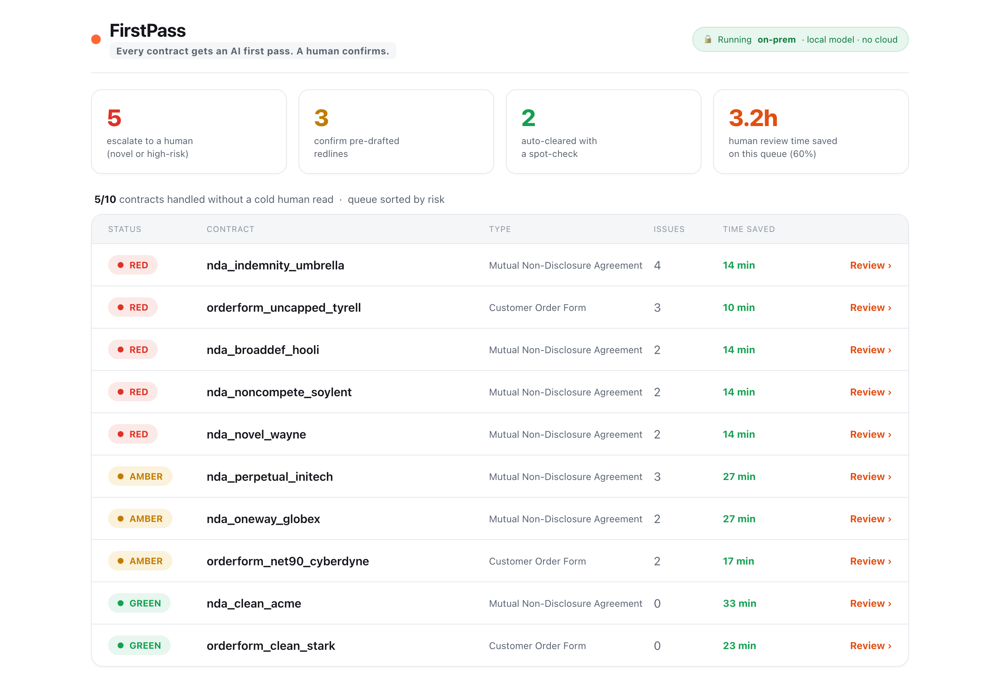
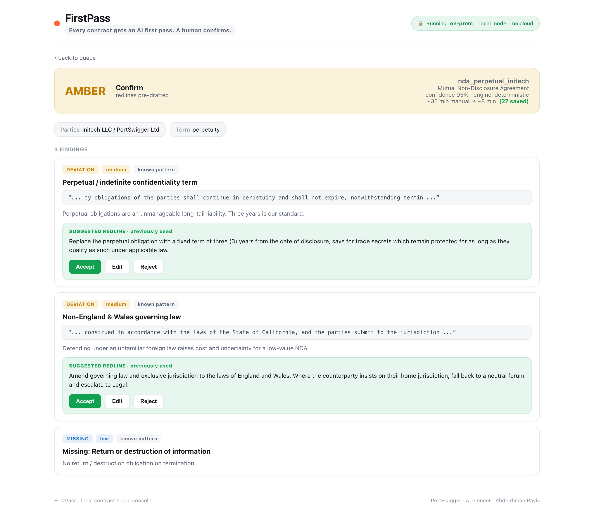

FirstPass
AI contract triage for in-house legal teams
Every contract gets an AI first pass. A human confirms. The queue gets shorter every month.
Abdelrhman Rayis · PortSwigger AI Pioneer · July 2026
RED — escalate
AMBER — confirm
GREEN — auto-clear
🔒 on-prem · local AI · no cloud
01 · The Solution
The Code
A working, measurable prototype that reads commercial contracts (NDAs, order forms),
checks them against a living playbook of standard positions, and routes each one
as GREEN, AMBER or RED. Built to run entirely on your own servers.
7-step agentic loop
Deterministic engine
Local-model reasoning layer
Learning flywheel
0
unsafe misses: nothing risky auto-cleared
100%
triage verdict accuracy (10 of 10)
93%
material-issue recall, no LLM


View the code on GitHub ›
02 · See it in action
Demo Video
A walkthrough of FirstPass running live: the CLI queue in under 30 seconds,
the web console a lawyer would open each morning, and the learning flywheel
closing the one recall gap the eval found.
▶ FirstPass demo
Watch the prototype triage 10 contracts, the web console at work, and the
learning loop in action — all running offline on a local machine.
No cloud, no API keys, no contract text leaving the building.
Watch on GitHub ›
⚙ Quickstart (30 seconds)
python3 -m venv .venv && source .venv/bin/activate
pip install -r requirements.txt
python run.py --all
python webapp/app.py # http://localhost:5050
03 · The Story
Presentation Deck
18 slides that walk through the thinking, not just the feature list.
From first principles and five whys through the agentic loop, measured
results, privacy architecture, and how I would add value at PortSwigger.
How I think
First principles
Five whys
Systems thinking
80/20
Measured results
Privacy by design
📄 FirstPass_PortSwigger.pdf — 18 slides
PortSwigger-branded (white, orange, clean). Covers the scenario, root cause,
the solution running live, screen captures of the console, evaluation metrics,
the learning flywheel, GDPR and privacy architecture, and my fit for the role.
Auto-generated from deck/build_deck.py so it is reproducible.
Open the deck (PDF) ›
Download PPTX ›
💼 What the deck covers
Cover → Agenda → Delivery plan → How I think → The scenario
→ Five whys → First principles → Systems thinking →
Business analysis → The agentic loop → Why agentic not n8n →
Live console → Inside a review → Measured results →
Learning flywheel → Privacy & standards → My fit → Close